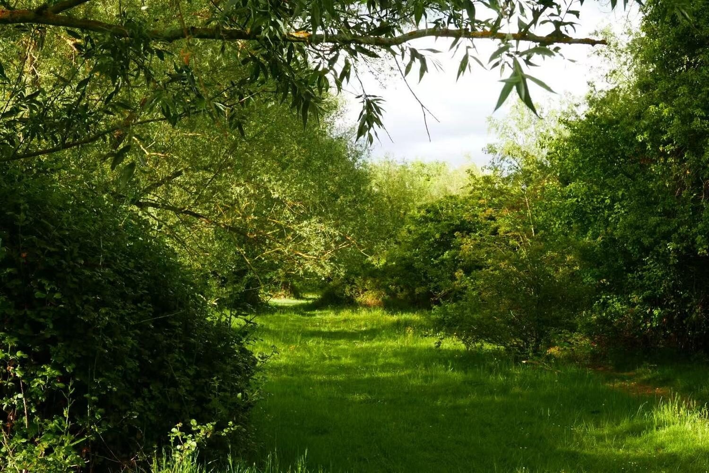
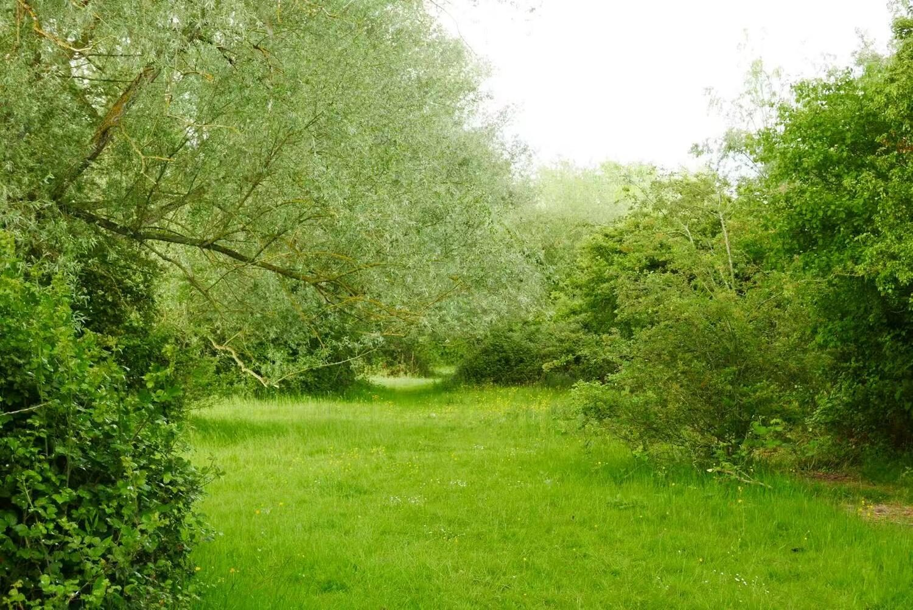

Interstitial Laboratory
Rejuvenation of the Cam River through chalk stream integration
Site elevation collage showing public access to "Trout Ponds" — hover to reveal


The Site
Queen's College Cambridge





Zooming in...


The Program
[Placeholder — this write-up is still the Library As Bathhouse program copy on the live site and needs to be rewritten for Interstitial Lab.]
The Library is to integrate three novel spaces inspired by key rooms inside Roman baths:
I. Frigidarium: the social heart of the baths
II. Caldarium: a reflective bathing room
III. Tepidarium: the warm-up space


Site-Induced Circulation Logic
Initially, the narrow site width (7m) inspired a straight 30m stepped walkway connecting rooms from the brick wall entrance to the Cam river.


However, this created a long, congested circulation between rooms, so the walkway was twisted around itself to minimize travel distance between rooms by half.


Curating Light

Construction Sequence